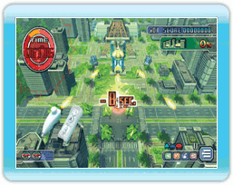

6 |
Game Summary |
 |
In “SPACE INVADERS GET EVEN,” you control your UFO to take over Earth in this invasion-shooting game. Control your fellow Invaders to destroy Earth’s tanks, military machines, forts, and secret weapons. Compete with other players around the world by being the highest scorer on each stage and leaving your mark in the Global Rankings. The original game contains 3 areas. You can play extra missions by purchasing "Mission Packs." |
| Rules of the Game | ||
 UFOs cannot stay in the Earth’s polluted skies for very long. You must keep track of how much time (indicated in the upper-left corner of the screen) you have left as you invade your assigned area. If you run out of time, you will perish from the effects of the pollution and the game will be over. UFOs cannot stay in the Earth’s polluted skies for very long. You must keep track of how much time (indicated in the upper-left corner of the screen) you have left as you invade your assigned area. If you run out of time, you will perish from the effects of the pollution and the game will be over. |
| Losing and Gaining Time | ||
You will lose time when your UFO is damaged by enemy attacks.
You can gain time by destroying weapons and buildings.
The amount of time that you gain or lose will depend on the type of enemy and attack.
|
| Losing and Gaining Invaders | ||
 If your UFO is attacked when surrounded by Invaders, your Invaders will take the damage for you.
If you don’t have enough Invaders to attack, swing your Wii Remote and Nunchuk to recover some. You can replenish your Invaders as many times as necessary, but you cannot move while doing so, meaning precious seconds could be wasted. If your UFO is attacked when surrounded by Invaders, your Invaders will take the damage for you.
If you don’t have enough Invaders to attack, swing your Wii Remote and Nunchuk to recover some. You can replenish your Invaders as many times as necessary, but you cannot move while doing so, meaning precious seconds could be wasted.
|
 |
 |
 |